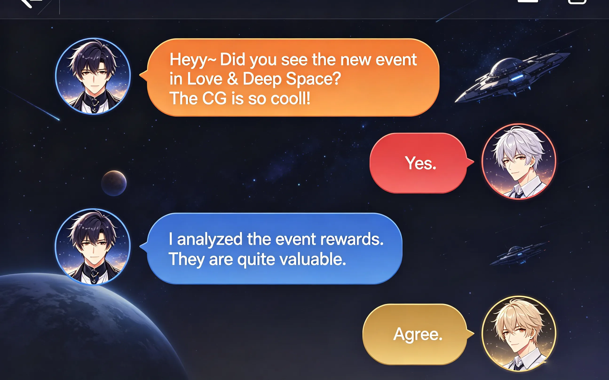
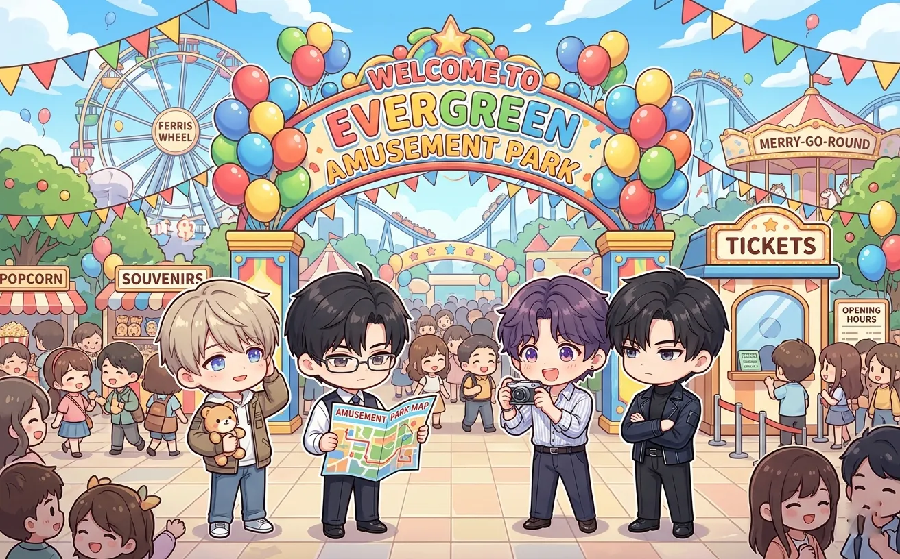
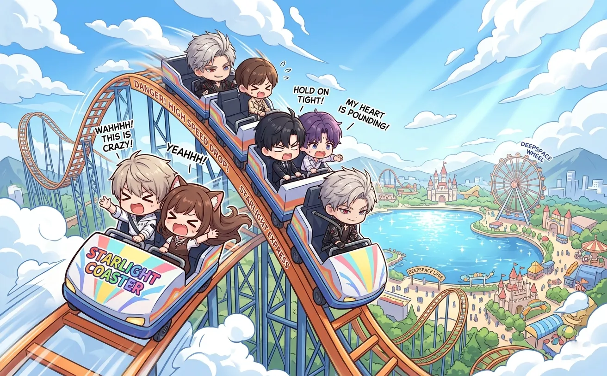
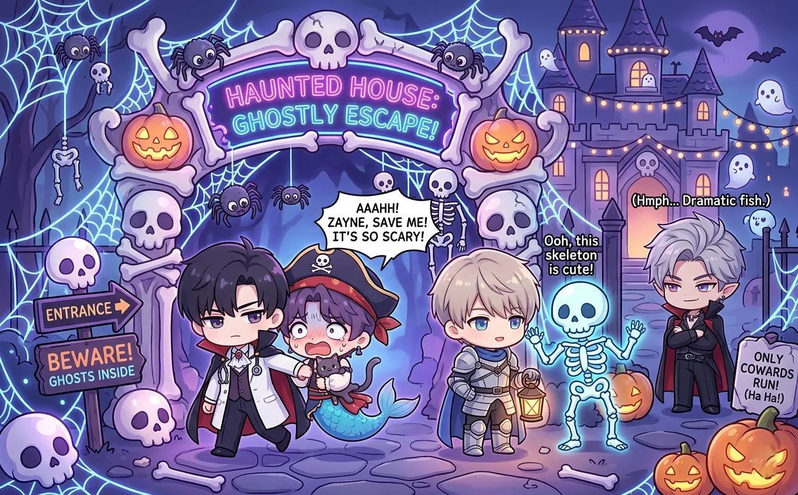
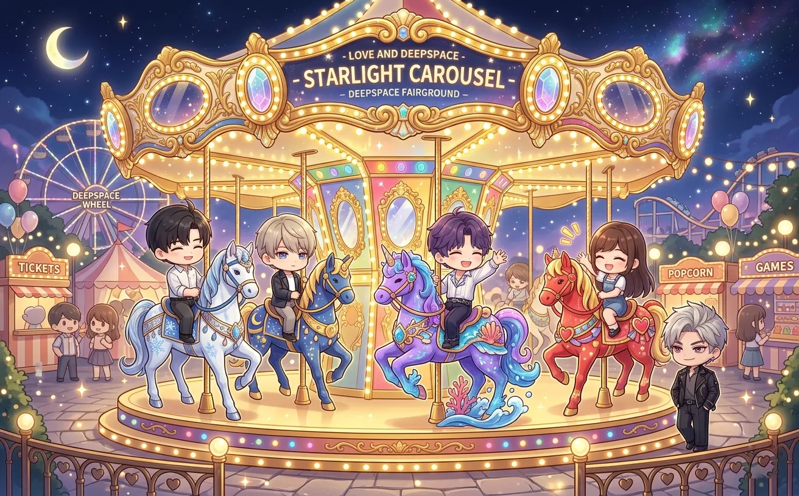
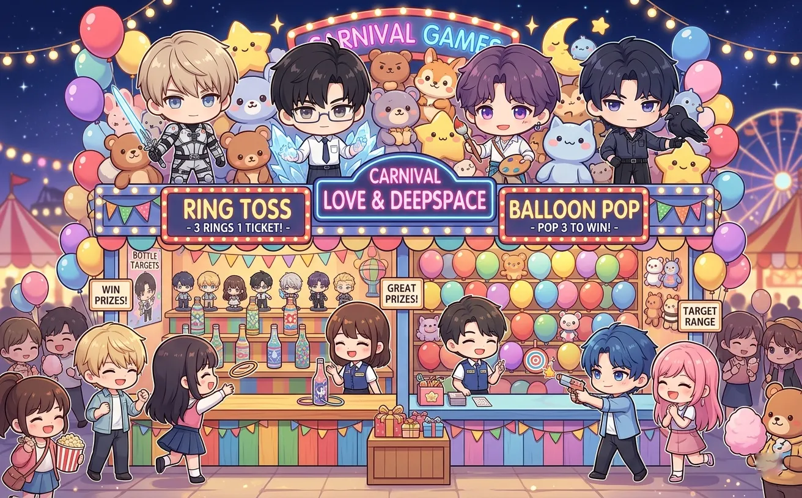
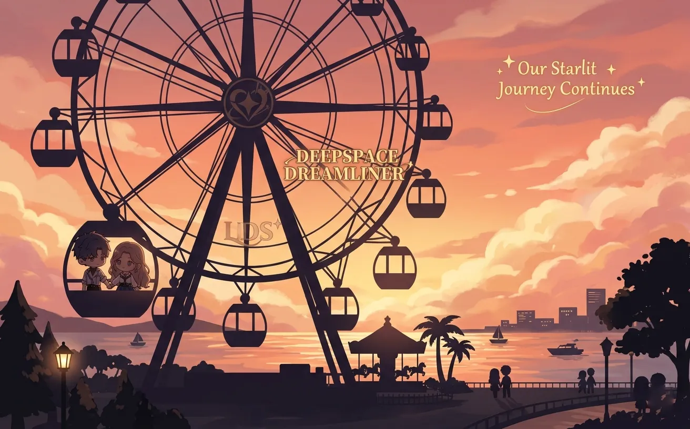
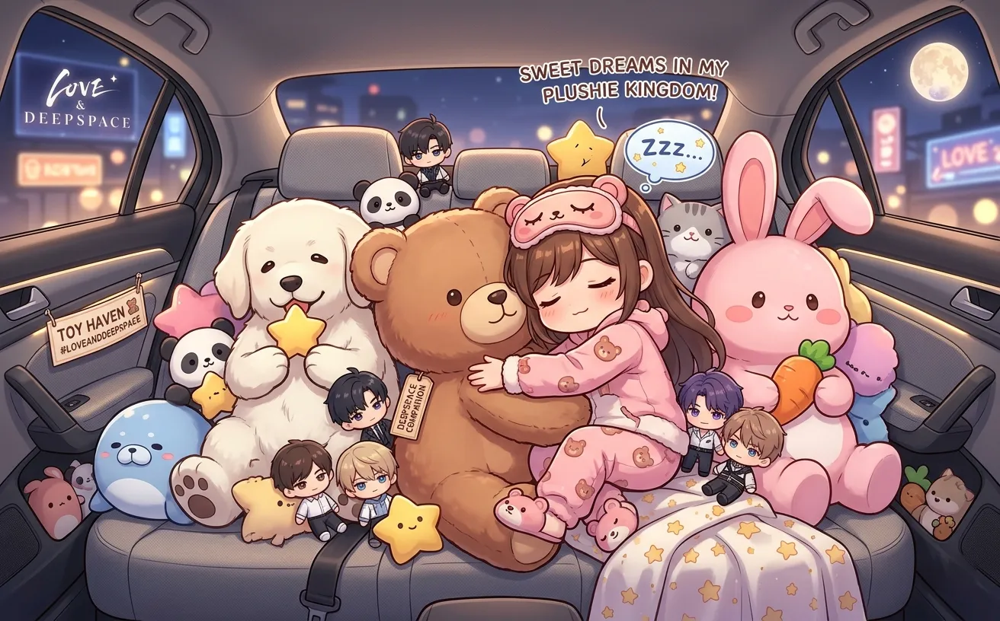

or: four men, one theme park, zero survival instincts
it started, as most disasters do, with rafayel.
"we should go to an amusement park," he said.
no one asked why. no one ever asks why.
this is what happened next.


rafayel arrived first. he had been planning this for weeks.
sylus arrived second. black coat. black sunglasses. indoors. at an amusement park.
"you're wearing sunglasses," said rafayel.
"the sun is bright."
"it's cloudy."
"ambiance."
zayne arrived third. he was carrying a large bag.
"what's in the bag," asked rafayel.
"first aid kit. water. hand sanitizer. emergency contact forms."
"emergency contact forms?"
"you never know."
xavier arrived fourth. twenty minutes late. he had fallen asleep in the car again.
"sorry," he said. "the seat was comfortable."
"you weren't driving," said rafayel.
"i know. the back seat."
silence.
"let's go," said rafayel.
and they went.

rafayel dragged them to the biggest roller coaster in the park.
"no," said zayne.
"yes," said rafayel.
"the g-force on this model exceeds recommended safety margins."
"live a little."
sylus stared at the ride. "it's inefficient."
"you said that already."
"i'll say it again."
xavier was already in line. "the queue has benches."
he sat down. closed his eyes.
"xavier, you can't sleep in line."
"watch me."
he didn't. the line moved. he woke up. got on the ride. fell asleep again during the climb. woke up during the drop. screamed. went back to sleep.
rafayel was terrified. he gripped the harness so hard his knuckles turned white.
sylus didn't make a sound. he didn't even change expression.
zayne recited safety statistics the entire time.
when it ended, rafayel's legs were shaking.
"that was..." he paused. "intense."
"you're crying," said sylus.
"no i'm not."
"there are tears on your face."
"it's adrenaline."
zayne handed him a tissue. "it's okay to be scared."
"i wasn't scared."
no one believed him.

"next stop: the ghost train," announced rafayel.
"ghosts aren't real," said zayne.
"i know. that's why it's fun."
sylus raised an eyebrow. "you cried on the roller coaster."
"i did NOT cry."
"there were tears."
"it was allergies."
they entered the ghost train. it was dark. there were skeletons. cobwebs. bad sound effects.
zayne started lecturing about the history of haunted houses.
sylus walked through like he was in a hallway.
xavier fell asleep again.
a fake zombie jumped out. rafayel screamed. grabbed sylus's arm.
sylus looked down at him. "you're grabbing me."
"it's dark."
"you're scared."
"i'm NOT scared."
another zombie jumped out. rafayel screamed again.
sylus didn't move. didn't flinch. didn't say anything.
but he didn't pull his arm away.
zayne, meanwhile, was explaining the psychological mechanism of fear to the zombies.
"your jump scares are predictable," he told one. "you should vary your timing."
the zombie stared at him. walked away.
xavier slept through the entire thing. he didn't even know there were zombies.

xavier had been waiting for this moment all day.
"the merry-go-round," he said. his eyes were shining.
"it's for children," said rafayel.
"it's for everyone."
he climbed onto a horse. sat there. didn't move.
the ride started. the music played. the horses went up and down.
xavier closed his eyes. within thirty seconds, he was asleep.
rafayel stared at him. "he's asleep."
"he's always asleep," said sylus.
zayne took out his phone. took a picture. "evidence."
the ride ended. xavier didn't wake up.
the ride started again. the operator looked confused but let it go.
xavier slept through the second ride. and the third.
"should we wake him?" asked rafayel.
"no," said sylus. "he looks peaceful."
they let him sleep for four rides.
when he finally woke up, he said: "that was the best part of the day."
rafayel stared at him. "you were asleep."
"i know. i dreamed about horses."

rafayel wanted to win a prize.
"i'm going to win that giant bear," he announced.
he threw five rings. missed all of them.
"this game is rigged."
zayne tried. calculated the trajectory. threw the ring. missed.
"the physics are inconsistent," he said.
xavier tried. threw the ring. it bounced off the bottle. fell on the ground.
"i wasn't trying," he said. then he yawned.
sylus stepped up. didn't say anything. threw one ring. it landed perfectly around the bottle.
the booth operator's eyes widened.
sylus pointed at the giant bear. "that one."
he won five more games in a row. won a giant bear. a giant dog. a giant rabbit. a giant penguin. and a small rubber duck.
he gave the duck to rafayel. "you tried."
rafayel looked at the duck. looked at sylus. "i hate you."
he kept the duck anyway.

the sun was setting. the park was getting quieter.
rafayel looked at the ferris wheel. "one more ride?"
"no," said zayne. "the structural integrity of—"
"one more ride."
they got on. four men. one capsule. too small.
xavier fell asleep immediately.
zayne looked out the window. "the view is... acceptable."
sylus looked at the horizon. didn't say anything.
rafayel took out his phone. took a picture. "this was a good day."
"you cried on the roller coaster," said sylus.
"i did NOT cry."
"you screamed on the ghost train."
"that was... excitement."
zayne sighed. "you also grabbed sylus's arm."
"DID NOT."
"i have evidence," said zayne, holding up his phone.
rafayel tried to grab it. zayne held it higher.
xavier mumbled in his sleep: "more horses."
the ferris wheel reached the top. the city sparkled below.
"it's beautiful," said rafayel.
sylus looked at the city. then at rafayel. "it's adequate."
for sylus, that was practically a compliment.

the car was packed. sylus's prizes took up most of the space.
xavier was in the back seat, holding the giant bear. he was using it as a pillow.
zayne was in the passenger seat. reviewing his notes on amusement park safety.
rafayel was in the back, holding the rubber duck.
"today was fun," he said.
"you cried," said sylus.
"i did NOT cry."
"there were witnesses."
zayne nodded. "i have photographic evidence."
rafayel slumped in his seat. "i hate all of you."
no one believed him.
sylus drove. the city lights blurred past. the car was quiet.
xavier snored softly. the bear's head flopped against the window.
"same time next year?" asked rafayel.
"no," said zayne.
"maybe," said sylus.
xavier, still asleep, mumbled: "merry-go-round."